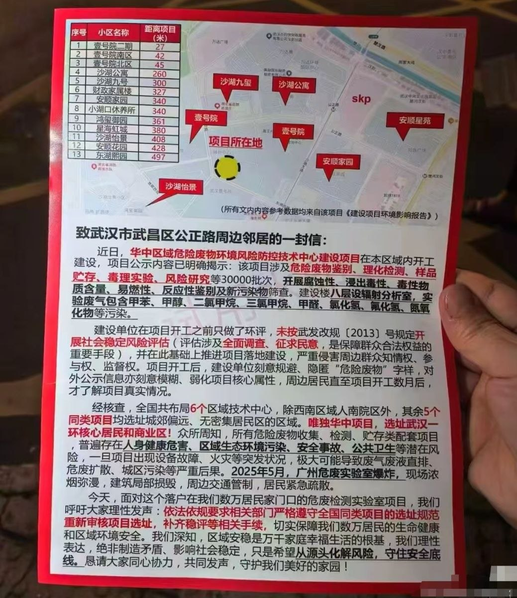
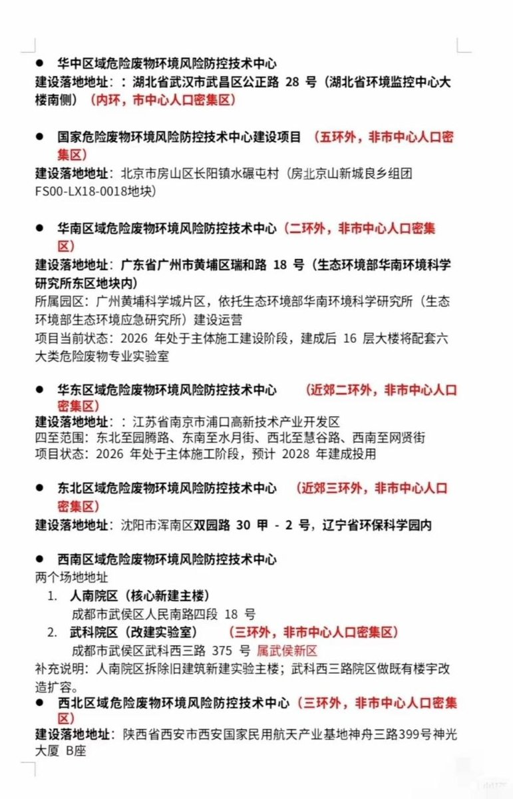
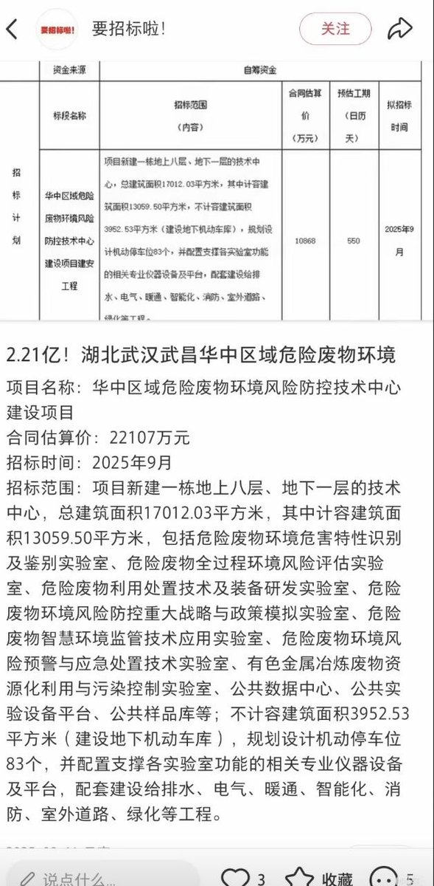

asuka 🏳️⚧️🍥🏳️🌈🏴
@H4lf_L13_F8964
@whyyoutouzhele 前几年垃圾焚烧厂修在区中心然后真人快打的也是武汉……当地领导班子藐视经验，记吃不记打



李老师不是你老师
@whyyoutouzhele
近日，武汉武昌核心区爆发群体抗议：2亿危废实验室建在居民楼旁，全网封锁“失联”
湖北武汉武昌区公正路周边爆发大批居民集体维权行动。现场流出的视频与图片显示，大批警力连夜在涉事地段列队驻守，气氛极其紧张。
当地居民极度愤怒和恐慌：
1、选址极其离谱： https://t.co/k0UmNiMXlY